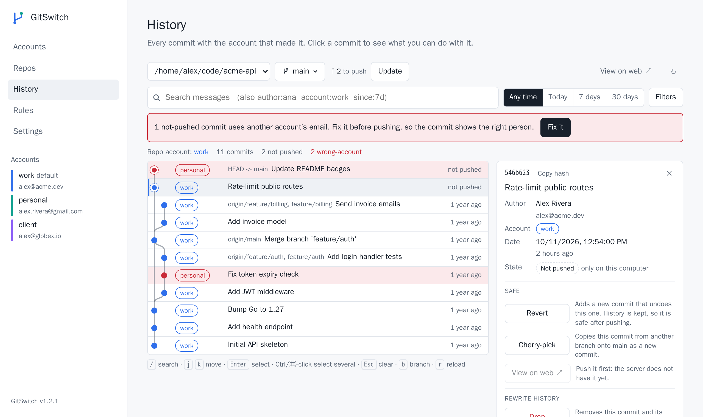
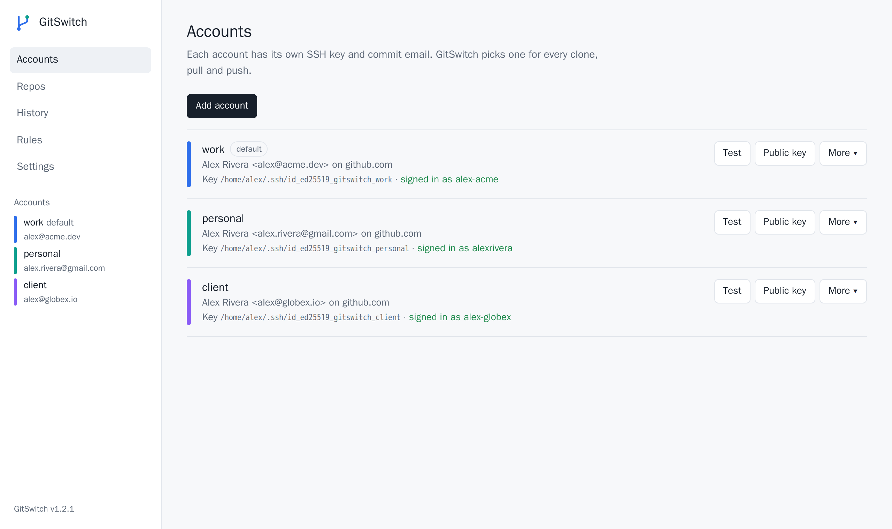
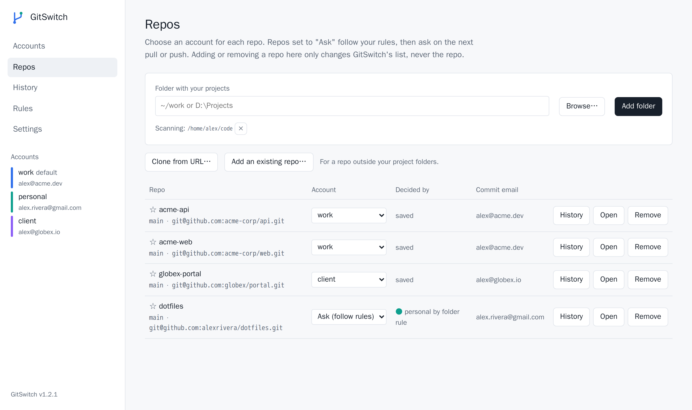
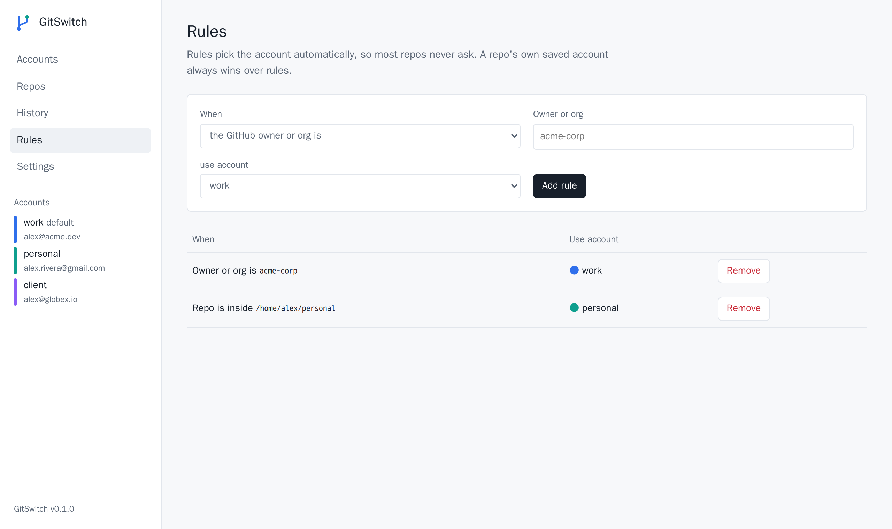
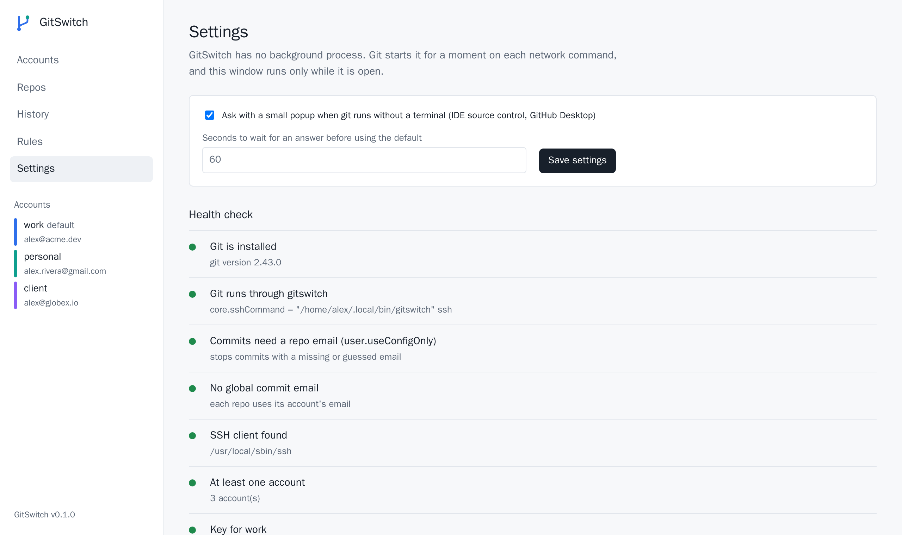
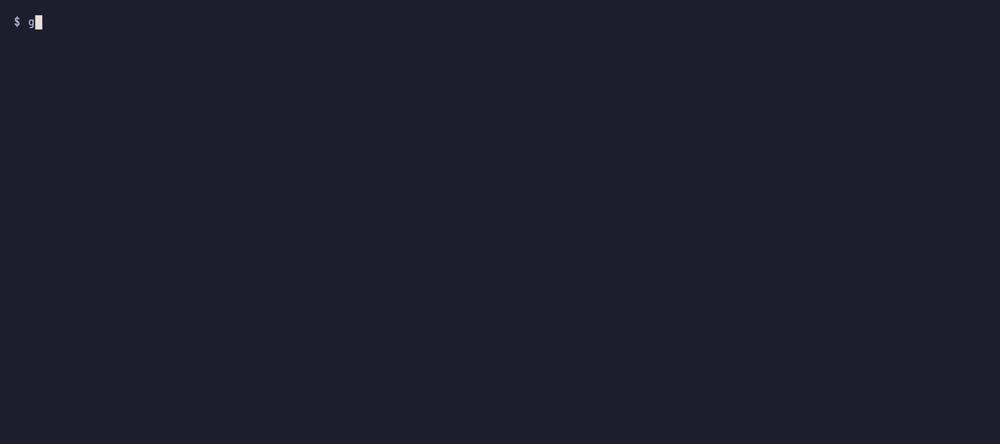

Several git accounts.
One computer. No URL tricks.
GitSwitch picks the right SSH key and commit email for every clone, pull and push, for work, personal and client accounts, in every terminal and IDE.
Windows · macOS · Linux · WSL — single binary, MIT licensed
$ git push Git account for my-company/api? [Enter] personal (default) 1 personal you@gmail.com 2 work you@company.com Type a number for this time, or add ! to always use it for this repo (e.g. 2!): 2!
Stays out of your way
Keep using normal git@github.com:owner/repo.git URLs. GitSwitch works out which account a repo belongs to and uses it.
One file, one-time install
A single binary for Windows, macOS and Linux. Keeps working after restarts and updates.
Nothing in the background
Git starts GitSwitch for a moment on each network command (~15 ms, ~10 MB), then it exits.
Terminal app and desktop app
Two front ends sharing the same settings. A change in one shows up in the other.
Works wherever git runs
Windows Terminal, PowerShell, macOS Terminal, iTerm, VS Code, JetBrains IDEs, GitHub Desktop, SourceTree.
History you can act on
The account behind every commit. Revert, drop, roll back and cherry-pick, switch branches and pull, with each step explained.
Built-in health check
gitswitch doctor finds settings that make git skip GitSwitch or log in as the wrong account, and fixes them.
Install
The installer detects your system, downloads the matching binary from the latest release, verifies its SHA-256 checksum and installs it.
curl -fsSL https://raw.githubusercontent.com/macdipu/gitswitch/main/install.sh | sh
irm https://raw.githubusercontent.com/macdipu/gitswitch/main/install.ps1 | iex
go install github.com/macdipu/gitswitch/cmd/gitswitch@latest gitswitch install
Then open a new terminal. Run the same line again to update, or grab a binary from the Releases page.
1. Run the setup wizard
Add each account, create or pick an SSH key, add it on GitHub, and GitSwitch checks the login for you.
gitswitch setup
2. Or script it
One command per account, plus rules so most repos never need to ask.
gitswitch account add work --email you@company.com --key new --default gitswitch account add personal --email you@gmail.com --key new gitswitch rule add owner:my-company work gitswitch rule add folder:~/personal personal
3. Use git as usual
Clone, pull and push with normal URLs. The right key and commit email are picked automatically.
git clone git@github.com:owner/repo.git
How an account is chosen
For each repo, GitSwitch checks in this order and uses the first match. It also sets the repo's user.name and user.email.
- The account saved for the repo (
gitswitch use work). - An owner rule:
owner:my-companymatches every repo of that org, even duringgit clone. - A folder rule:
folder:~/work. - In a terminal, it asks. Type
2for this time only, or2!to save it for the repo. - With no terminal (e.g. an IDE's Source Control panel), a small popup asks.
- Otherwise, the default account. Nothing ever hangs waiting for an answer.
History and branches, without the fear
The History page and gitswitch commands let you undo, copy and find commits. They always use the repo's account and never rewrite anything you have already pushed.
Safe by default
Every action says what it does to your work. Drop and roll back only touch commits that are not pushed, and roll back keeps the changes in your files. If something does not apply cleanly, nothing changes.
Find any commit
Search the whole history by message, author, account or date. Type words, or tokens like author:ana since:7d; filters show as chips you can remove.
Branches in one click
See what you have to push and pull, switch branch (remote ones too) and update. Pulls never create a surprise merge commit.
For your first week of git
Click a commit in the desktop app. It shows the safe actions first, explains each one, and puts the ones that rewrite history apart, with the reason when they are not allowed.
For every day
Keys for everything (/ search, j/k move, b branch), Ctrl/⌘-click to cherry-pick several commits, and the same actions in the terminal app and the CLI.
gitswitch log --author ana --since "2 weeks ago" gitswitch switch origin/feature-x gitswitch update gitswitch revert 1a2b3c4 gitswitch cherry-pick 5d6e7f8 9a0b1c2 gitswitch rollback 1a2b3c4 gitswitch browse 1a2b3c4
Terminal app and desktop app
Run gitswitch for the terminal app or gitswitch ui for the desktop app. Both show Accounts, Repos, History, Rules and Settings.

The account behind every commit, the branch and what to push or pull, search, and a commit's actions explained in plain words.

Each account with its key and the GitHub user it logs in as.

The account for each repo, and what decided it.

Owner and folder rules, so most repos never need to ask.

Settings and the health check, with one-click fixes.

The terminal app: great for IDE terminals, SSH sessions, WSL and servers.
IDE notes
Most setups need nothing. A few tools have quirks worth knowing.
| Tool | What to know |
|---|---|
| VS Code | Nothing to set. The integrated terminal prompts; the Source Control panel uses rules, the popup or the default. |
| JetBrains IDEs | If your version has Settings → Version Control → Git → SSH executable, choose Native. |
| Key passphrases | Run gitswitch key agent <account> once to store it in the OS agent or macOS Keychain. |
| Windows | The Windows ssh-agent service remembers passphrases. gitswitch doctor tells you if it is off. |
| WSL | WSL has its own git. Install the Linux binary inside WSL too. |